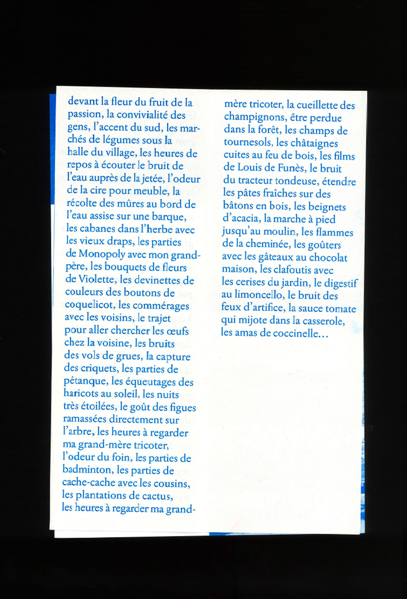
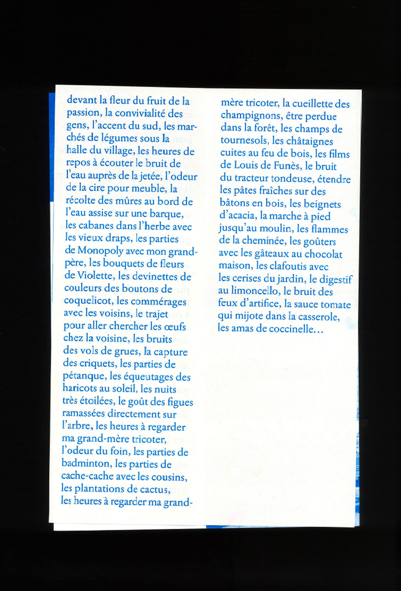

- ←
- Duras
- →

Faire une conférence de 10 min sur un thème que l’on a envie d’aborder et de faire découvrir aux autres. Pour ma part, j’ai voulu proposer une expérience à vivre au travers d’un endroit qui m’est cher, et dans lequel j’ai de nombreux souvenirs. Ce lieu se nomme Duras, petit village de campagne situé en Nouvelle Aquitaine. J’ai souhaité commencer par des extraits de Marguerite Duras, ma conférence traitant d’un sujet personnel j’ai voulu l’ammorcer par un texte populaire de cette écrivaine afin que cela parle à la plupart d’entre-nous. J’ai voulu une expérience immersive, que ce lieu vienne à nous dans la salle de conférence. Pour cela, j’ai mis à profit les 5 sens du public, le son par le texte lu à voix haute ainsi qu’une bande sonore reprennant les bruits de campagne de ce village, la vue par la projection de photos prises lors d’une ballade au bord du Dropt. Le goût était aussi présent avec une dégustation de merveilles, gâteaux réalisés par ma grand-mère lorsque j’étais enfant. L’odorat quant à lui, était présent sur les scripts de la conférence parfumés à la figue. Cette conférence fût un moment familial, intime autour de la retranscription de souvenirs d’un lieu que chacun peut s’approprier au travers d’un endroit qui lui est particulièrement personnel.
 
